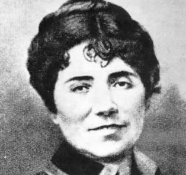

Rosalía de Castro
María Rosalía Rita de Castro (Santiago de Compostela, 23 de febrero de 1837-Padrón, 15 de julio de 1885) fue una poetisa y novelista española que escribió tanto en gallego como en castellano. Considerada entre los grandes poetas de la literatura española del siglo xix. Rosalía pasó por un proceso de sacralización al que fue sometida y que acabó por convertirla en encarnación y símbolo del pueblo gallego. Además, es considerada junto con Gustavo Adolfo Bécquer, la precursora de la poesía española moderna.